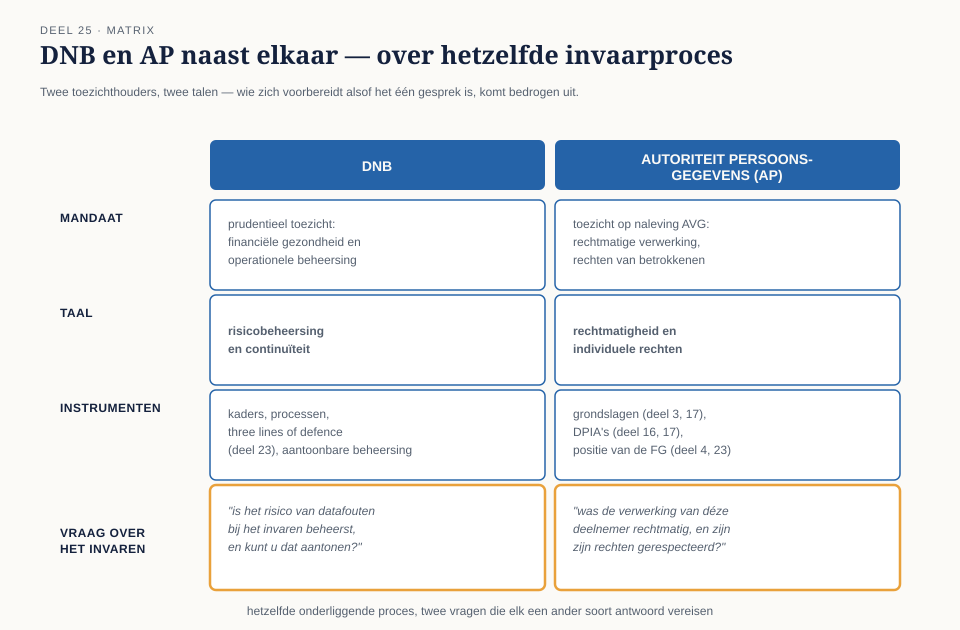
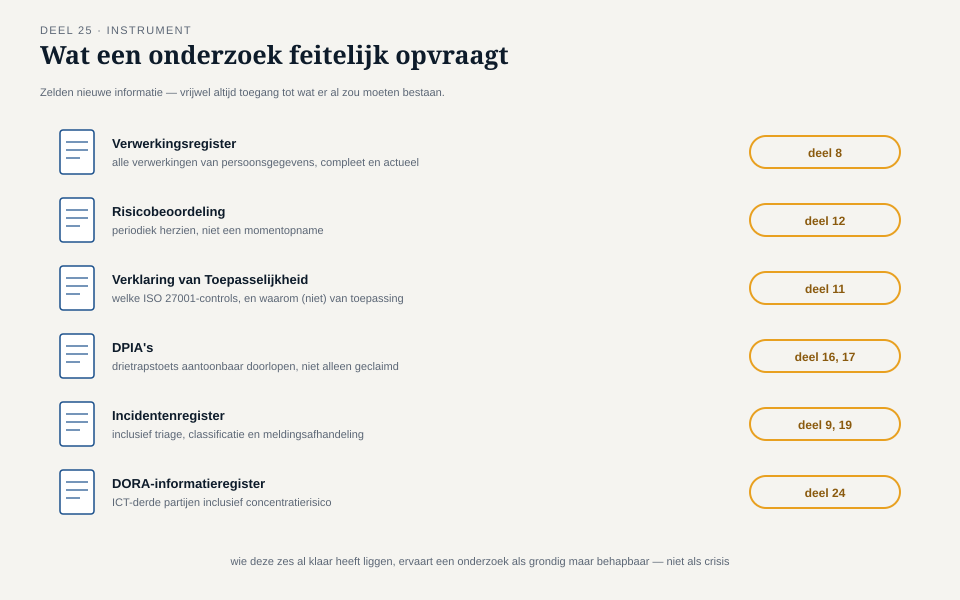
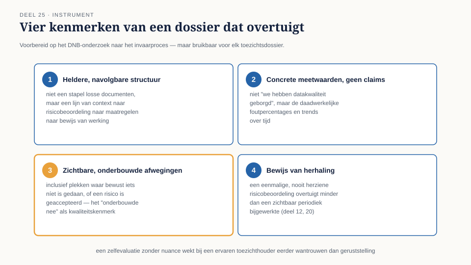

Deel 25 — Toezicht en aantoonbaarheid
Reader · Ductus-cursus Informatiebeveiliging en Privacy · niveau 3 (expert) · deel 25 van 30
Casusvervolg: twee brieven, twee talen
In dezelfde week ontvangt Meridiaan twee brieven. De eerste, van DNB, kondigt een regulier onderzoek aan naar de beheersing van ICT-risico's in het kader van de Stelselovergang — specifiek gericht op de datakwaliteit van het invaarproces. De tweede, van de Autoriteit Persoonsgegevens, is een reactie op een klacht van een deelnemer die vermoedt dat zijn gegevens onjuist zijn meegenomen bij het invaren, met vragen over de gehanteerde grondslag en de getroffen waarborgen.
Hugo, die beide brieven naast elkaar op zijn bureau legt, merkt op: "Deze twee gaan over hetzelfde onderliggende proces — het invaren — en toch voelen ze als twee compleet verschillende gesprekken." Hij heeft gelijk, en dit deel legt uit waarom: DNB en de AP zijn twee toezichthouders met een verschillende taal, een verschillend mandaat, en verschillende instrumenten — en een organisatie die zich voorbereidt alsof het één gesprek is, komt bedrogen uit.
1. Twee toezichthouders, twee talen
DNB houdt prudentieel toezicht: is de instelling financieel gezond en operationeel beheerst, kan ze haar verplichtingen nakomen, zijn de risico's — waaronder ICT-risico's, sinds DORA (deel 24) expliciet — onder controle? DNB's taal is die van risicobeheersing en continuïteit: kaders, processen, three lines of defence (deel 23), aantoonbare beheersing.
De Autoriteit Persoonsgegevens houdt toezicht op de naleving van de AVG: worden persoonsgegevens rechtmatig, behoorlijk en transparant verwerkt, worden de rechten van betrokkenen gerespecteerd? De AP's taal is die van rechtmatigheid en individuele rechten: grondslagen (deel 3, deel 17), DPIA's (deel 16, 17), de positie van de FG (deel 4, deel 23).
Voor het invaarproces betekent dit: DNB vraagt "is het risico van datafouten bij het invaren beheerst, en kunt u dat aantonen?" — een procesvraag. De AP vraagt "was de verwerking van déze specifieke deelnemer rechtmatig, en zijn zijn rechten gerespecteerd?" — een individuele, rechtmatigheidsvraag. Beide vragen gaan over hetzelfde onderliggende invaarproces, maar vereisen een ander soort antwoord, met andere bewijsstukken en een andere toon.
2. Zelfevaluaties als voorbereidend instrument
Beide toezichthouders vragen, voorafgaand aan of als onderdeel van een onderzoek, vaak om een zelfevaluatie: een door de organisatie zelf opgestelde beoordeling van de eigen staat, volgens een door de toezichthouder aangereikt of impliciet gehanteerd kader. Voor DNB is dit vaak (mede) gebaseerd op het volwassenheidsmodel uit deel 20 — de vier niveaus, met "opzet, bestaan en werking" als hoogste niveau. Voor de AP bestaat geen identiek, gestandaardiseerd volwassenheidsmodel, maar een goed voorbereide organisatie hanteert intern een vergelijkbare discipline: niet alleen claimen dat een grondslag houdbaar is, maar aantoonbaar kunnen maken hóe de drietrapstoets (deel 17) is doorlopen.
Een zelfevaluatie die naar een toezichthouder wordt gestuurd, is zelf weer een toepassing van de rode draad uit deel 1: een zelfevaluatie die alleen claimt dat alles op orde is, zonder bewijs of nuance, wekt bij een ervaren toezichthouder eerder wantrouwen dan geruststelling — precies zoals een audit zonder bevindingen verdacht is (deel 21). Een zelfevaluatie die eerlijk aangeeft waar nog werk te doen is, met een concreet verbeterplan, is doorgaans geloofwaardiger én bouwt een betere relatie met de toezichthouder op voor de lange termijn.
3. Wat een onderzoek feitelijk vraagt
Een toezichtsonderzoek — van DNB of de AP — vraagt in de praktijk zelden om nieuwe informatie die nog verzonnen moet worden. Het vraagt om toegang tot wat er al zou moeten bestaan: het verwerkingsregister (deel 8), de risicobeoordeling (deel 12), de Verklaring van Toepasselijkheid (deel 11), DPIA's (deel 16, 17), het incidentenregister (deel 9, deel 19), het DORA-informatieregister (deel 24). Een organisatie die deze documenten al heeft, actueel en aantoonbaar, ervaart een onderzoek als een grondige maar behapbare exercitie. Een organisatie die deze documenten moet reconstrueren op het moment dat de toezichthouder erom vraagt, ervaart een onderzoek als een crisis — niet omdat het onderliggende beleid slecht is, maar omdat de aantoonbaarheid ontbreekt.
Dit is de kern van waarom deze hele cursus, van deel 1 tot hier, zoveel nadruk legt op documentatie en vastlegging: niet uit bureaucratische reflex, maar omdat het verschil tussen een beheerst en een chaotisch toezichtsonderzoek vrijwel volledig wordt bepaald door wat er al lag vóórdat de brief kwam.
4. Hoe een dossier eruitziet dat overtuigt
Voor het DNB-onderzoek naar het invaarproces stelt Merel, samen met Hugo en de actuariële afdeling, een dossier samen dat een aantal kenmerken deelt met wat een goede DPIA (deel 16, 17) of een goede Verklaring van Toepasselijkheid (deel 11) overtuigend maakt:
- Een heldere, navolgbare structuur — niet een stapel losse documenten, maar een dossier dat een toezichthouder van context naar risicobeoordeling naar maatregelen naar bewijs van werking laat lopen.
- Concrete meetwaarden in plaats van claims — niet "we hebben datakwaliteit geborgd", maar de daadwerkelijke uitkomsten van datakwaliteitscontroles, met foutpercentages en trends over tijd.
- Zichtbare, onderbouwde afwegingen — inclusief plekken waar bewust is gekozen om iets níet te doen, of om een risico te accepteren, met de onderbouwing erbij (het "onderbouwde nee" dat door de hele cursusfamilie als kwaliteitskenmerk terugkeert).
- Bewijs van herhaling, niet alleen een momentopname — een risicobeoordeling die eenmalig is gedaan en nooit herzien, is minder overtuigend dan een risicobeoordeling die zichtbaar periodiek wordt bijgewerkt (deel 12, deel 20).
5. De kernzin
Aanwezig is niet aantoonbaar.
Deze verkorte versie van de rode draad uit deel 1 is, op dit niveau van de cursus, niet langer alleen een intern kwaliteitsprincipe — het is precies het verschil tussen een toezichtsonderzoek dat goed verloopt en een dat slecht verloopt. Een toezichthouder gelooft een organisatie niet op haar woord; ze vraagt om bewijs. Alles wat deze cursus vanaf deel 1 heeft opgebouwd — het verwerkingsregister, de risicobeoordeling, de DPIA's, het incidentenregister, de Verklaring van Toepasselijkheid — is uiteindelijk precies dat bewijs.
6. Terug naar Hugo's twee brieven
Meridiaan bereidt zich voor op beide onderzoeken parallel, met een gedeeld feitendossier over het invaarproces (de datakwaliteitscontroles, de risicobeoordeling, de genomen maatregelen) dat voor beide toezichthouders als basis dient, maar met een aparte, op maat gemaakte presentatie: voor DNB de nadruk op procesbeheersing en aantoonbare werking van het datakwaliteitsproces als geheel; voor de AP de nadruk op de grondslag voor de specifieke verwerking, de doorlopen DPIA, en de afhandeling van de individuele klacht die aanleiding was voor hun onderzoek. Hugo's observatie klopte — het zijn twee gesprekken — maar ze kunnen, met een gedeeld en goed onderhouden fundament, allebei overtuigend gevoerd worden vanuit dezelfde onderliggende praktijk.


